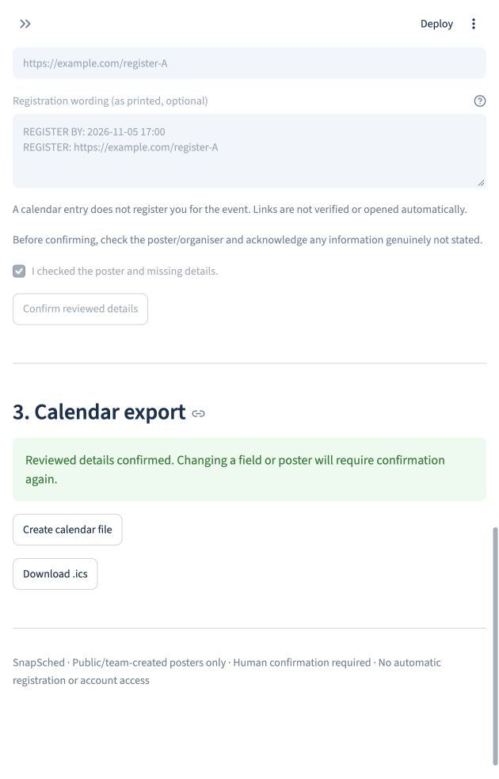

Bring the poster.
Upload one clear JPG or PNG. Give consent before the image is sent to the external AI service for extraction.
ONE POSTER AT A TIMEAILT9019 · TEAM 02
Capture the event.
Check the details. Keep the date.
SnapSched turns one event poster into editable event details and a calendar file. AI handles the first pass. You make the final call.
Python + Streamlit · Gemini extraction · iCalendar export
15:00–16:00 · Hong Kong
Demo Room 101
Illustrated workflow · team-created example, not a real event
01 / THE WORKFLOW
Event details get lost between a poster and a calendar. SnapSched keeps the source, the review and the export in one focused workflow.
Upload one clear JPG or PNG. Give consent before the image is sent to the external AI service for extraction.
ONE POSTER AT A TIMECompare the draft with the poster. Edit the title, date, time, venue and registration details. Explicitly confirm your review.
YOU APPROVE THE DETAILSDownload an .ics file and import it into your calendar. An eligible future registration deadline can become a separate entry.
A FILE YOU CAN TAKE WITH YOUDESIGNED AROUND A CHECKPOINT
Reading a date is useful. Giving you a chance to catch a wrong date is essential.

02 / EVIDENCE, WITH CONTEXT
The recorded baseline uses 12 team-created synthetic posters. These results describe that small test set, not accuracy on arbitrary real-world posters.
Expected event names, dates, start/end times and venues.
One API-error case matched on a separate retry. The original failure is retained.
Application and integration checks; external model responses are mocked.
Extraction logic and response handling. These do not measure live AI accuracy.
Evidence recorded on 28 October 2026. Ding completed an independent poster review and Apple Calendar import on 12 November. Event details and the separate registration deadline were correct; the title omitted the synthetic “(DEMO)” marker. Other calendar clients and hosted application verification remain unconfirmed.
Read the evaluation record ↗A SMALL, DELIBERATE SCOPE
A calendar assistant should make uncertainty visible.
A missing date blocks export. Unknown venues and times are not invented. You must decide whether an event is all-day; no printed end time means no guessed duration.
Future registration deadlines can become separate calendar entries. Expired deadlines do not generate reminders. Creating a calendar entry does not register you for an event. QR codes require a manual check.
Live extraction sends a compressed image to the Gemini API. The app does not intentionally save uploads to its own database, but provider and hosting data policies still apply. Use public or synthetic posters. Clearing the session cannot erase downloaded files or provider records.
One event per image, single-day events and Hong Kong time. No calendar account access, automatic sync, mailbox scraping or automatic registration. Calendar import and alarm behaviour depend on the client.
03 / EXPLORE THE PROJECT
Run the Streamlit application locally with Python 3.11 or 3.12. Live extraction needs a configured Gemini API key. A clearly labelled saved sample is available without a key.
Open the application repositoryThe application repository requires authorised GitHub access.
This public page presents the project; image processing runs in the application.
git clone https://github.com/Ding-07-cn/SnapSched.git
cd SnapSched
python3 -m venv .venv
source .venv/bin/activate
python -m pip install -r requirements.txt
python -m streamlit run app.pyWindows: activate with .venv\Scripts\activate.
Add your key locally following the repository README.
BUILT FOR AILT9019
An AI Literacy II course project at the University of Hong Kong, focused on a practical, reviewable poster-to-calendar workflow. This student prototype is not affiliated with or endorsed by HKU.
The application uses Gemini for poster extraction. Codex assisted with implementation, integration, tests, documentation and this project webpage. Human review is required before calendar export. Tests using mocked responses are distinguished from live model evaluation.
Project page updated 12 November 2026.
For source, reproducibility and current implementation details, see the application README.